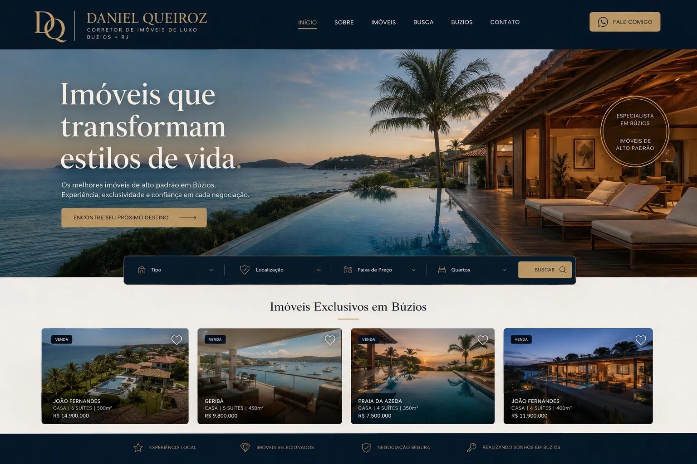

CASE DE SUCESSO · IMÓVEIS DE ALTO PADRÃO
Site estratégico e reposicionamento de branding qualificaram o público que chega até Daniel Queiroz, elevando leads e engajamento com a marca.
O CLIENTE

Daniel Queiroz atua na consultoria de imóveis de alto padrão, atendendo um público exigente e bem informado. O portfólio de imóveis tinha qualidade, mas a comunicação digital não refletia esse nível — atraindo curiosos em vez de compradores qualificados e dificultando a construção de autoridade diante de um público mais seletivo.
O DESAFIO
O maior desafio de Daniel Queiroz não era encontrar imóveis de qualidade — era comunicá-los de um jeito que refletisse o padrão do público que ele queria atrair. A presença digital anterior misturava leads de perfis muito diferentes, sem qualificação, o que tornava o processo comercial mais lento e menos eficiente para fechar negócios de maior valor.
DIAGNÓSTICO YANSIX
A análise mostrou que o público de alto padrão pesquisa de forma diferente: valoriza apresentação visual cuidada, informações completas sobre cada imóvel e uma marca que transmita exclusividade antes mesmo do primeiro contato. Sem isso, o site anterior filtrava mal os visitantes e não conseguia reter a atenção do público certo tempo suficiente para gerar interesse real.
SOLUÇÃO APLICADA
Nova identidade visual sofisticada, alinhada ao perfil de imóveis e clientes de alto padrão.
Site com apresentação premium do portfólio, páginas detalhadas de imóveis e caminho claro de contato.
Estrutura de conteúdo pensada para atrair e filtrar naturalmente compradores mais qualificados.
ESTRATÉGIA UTILIZADA
Entendimento do perfil de imóveis e do comportamento de pesquisa do comprador de alto padrão.
Identificação dos pontos de atrito que afastavam ou desqualificavam leads no site anterior.
Nova identidade visual e páginas de imóveis com apresentação premium e informações completas.
Ajustes de conteúdo para atrair um volume maior de compradores realmente qualificados.
Monitoramento do tempo em página e da qualidade dos leads para refinar a estratégia continuamente.
DEPOIMENTO
O novo site elevou o padrão da minha comunicação com clientes de alto padrão. O processo foi estratégico do início ao fim.
EXPLORE TAMBÉM